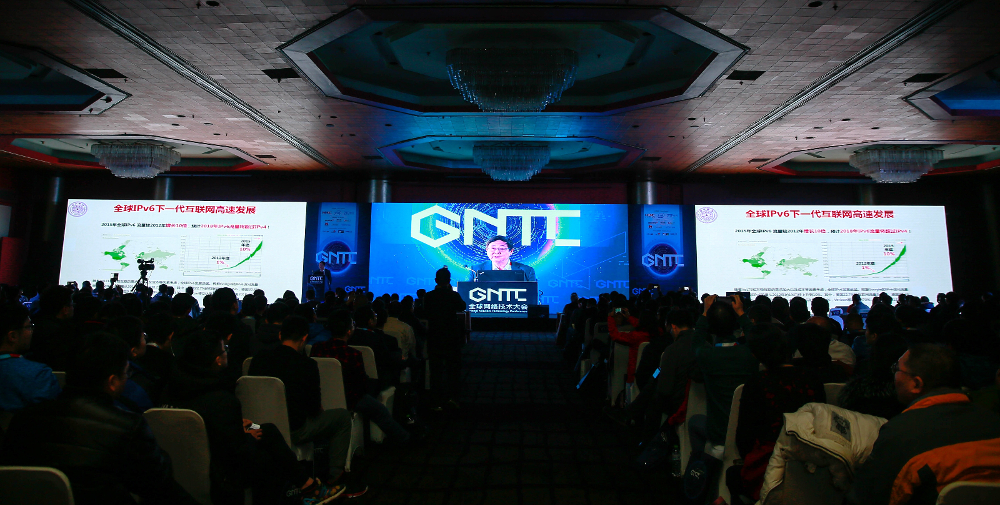
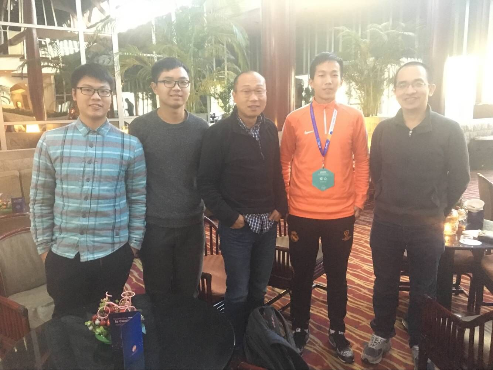
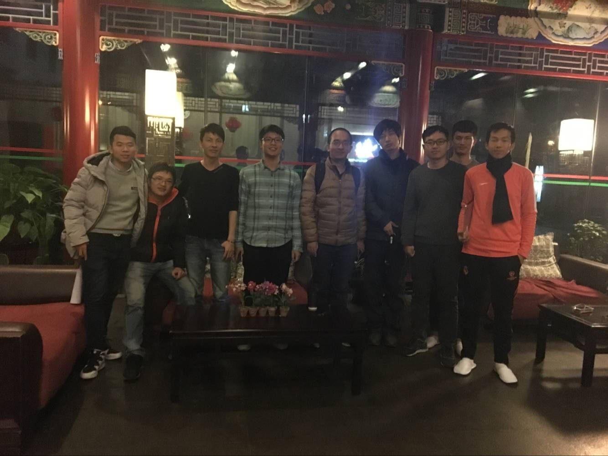

2016年12月7日，由下一代互联网国家工程中心主办的GNTC全球网络技术大会于北京盛大开幕。¬围绕“新技术、新架构、新网络”这一主题，近百位行业权威专家通过主题演讲、圆桌论坛、展览展示等多种形式，分享最前沿的技术演讲，探讨全球网络发展趋势。一场代际跃迁、开放融合的网络重构革命浪潮已呼之欲出，势必将影响产业链的方方面面，为全球网络带来超乎想象的全新机遇与挑战。
GNTC全球网络技术大会受到了业内的强烈关注，大会现场火爆异常。据下一代互联网国家工程中心副主任张旭东介绍，大会线上报名观众超过2000人，涵盖全球组织机构负责人、网络领域顶级专家、海内外主流运营商、知名互联网公司、先进设备商代表、权威媒体代表等产业链各个环节业内精英。在为期三天的大会过程中，大家通过思想碰撞和技术探讨切实助力产业发展，作为见证者同时也是参与者，共同目睹这场席卷全球的技术革命。

新技术层出不穷 加速网络发展迭代
“当前，网络空间已成为国家重大战略需求，掌握互联网核心技术是解决网络空间安全问题的‘命门’。”中国工程院院士吴建平在演讲中表示。事实上，伴随着网络的快速发展，早期网络体系架构面临着扩展性、适应性、移动性和安全性等多方面的严峻挑战，催生业界对兼容性更高的可靠网络体系的急迫需求。新需求带来新技术，IPv6、SDN、NFV、5G、NB-IoT、云计算等越来越多的创新型技术正在为网络带来全新生机，同时为商业生产和生活品质的提高贡献了前所未有的力量。
各领域的细分网络技术百花齐放，但同时所有技术的发展又伴随着融合与创新。无独有偶，Linux基金会网络策略副总裁Marc Cohn和ON.Lab副主任William Snow在各自演讲中同时提到了两个关键词：开放与融合。Marc Cohn认为，开源开放将助力网络重构。生机勃勃、开源开放的环境为网络带来了前所未有的速度发展迭代，本次GNTC全球网络技术大会也特别设立6个技术方向峰会，邀请近百位业内顶级专家学者参与其中，分领域探讨相关热点，激发技术思维碰撞。
新架构丞待建立 产业各方携手并进
互联网在飞速发展中承载了人们越来越高的期望，建立一个全新的网络架构体系迫在眉睫。与此同时，全球电信业正站在转型的十字路口，传统运营商亟需建设“高效、高速、智能”的网络来应对流量的爆炸式增长，产业链上下游的互联网企业也期待着新型网络架构能够带来更大的商机。高新尖技术的发展是网络重构之路上必不可少的铺路石，网络架构的重构也更加依赖于产业多方的携手共进。
互联网在飞速发展中承载了人们越来越高的期望，建立一个全新的网络架构体系迫在眉睫。与此同时，全球电信业正站在转型的十字路口，传统运营商亟需建设“高效、高速、智能”的网络来应对流量的爆炸式增长，产业链上下游的互联网企业也期待着新型网络架构能够带来更大的商机。高新尖技术的发展是网络重构之路上必不可少的铺路石，网络架构的重构也更加依赖于产业多方的携手共进。
新网络即将开启 未来网络无限生机
对未来的畅想从不停歇，对新网络的追求也从不止步。一个蓬勃发展的互联网，与一群探索发现新世界的人，在人类追寻持续发展的信念与想象力中相遇，正激荡出令人炫目的崭新气象，新的架构必将会带来令人欣喜的新网络蓝图。
中国工程院院士邬贺铨曾提出“大宽带、大连接、智能化、软件定义”四个通信网络技术发展的趋势，中国工程院院士吴建平对中国下一代互联网的思考也一直推进着中国网络产业发展，一个真正万物互联的现实世界也将从网络中孕育而生。网络发展带来的众多前所未有的机遇，不仅将为产业链上下游各方企业带去新的商机，促进技术的商业落地和产业部署，还将从根本上改变用户现有的生活方式，带领我们走向一个更好的网络世界。
除了主题演讲、圆桌论坛，本次大会还特别设立两个Workshop技术研讨会，采取别开生面的方式让到场嘉宾能够近距离交流切磋。12月8日上午的P4 Workshop由P4联盟和Barefoot联合举办，着重请代表们将分享在各自的产品领域应用P4技术的心得。8日下午，由ON.Lab和中国联通合办的CORD Workshop，将以“中国CORD联盟签约仪式”正式开场，分别从E-CORD、M-CORD、R-CORD三个专业领域分析CORD技术的发展前景。
值得关注的特别事件是，近期又有一大波业界领先设备商企业分别通过了全球IPv6测试中心负责的IPv6 Ready Phase-2测试认证项目和全球SDN测试认证中心负责的ONF OpenFlow v1.3认证项目。在本次大会的IPv6 Summit和SDN Summit上，将举办IPv6 Ready认证和OpenFlow认证的授牌仪式。
本届GNTC全球网络技术大会汇集了全球网络技术权威组织、互联网企业及各厂商、应用单位的专家，势必以全球视野，中国视角，抓住产业和技术核心，引领全球未来网络发展潮流。

